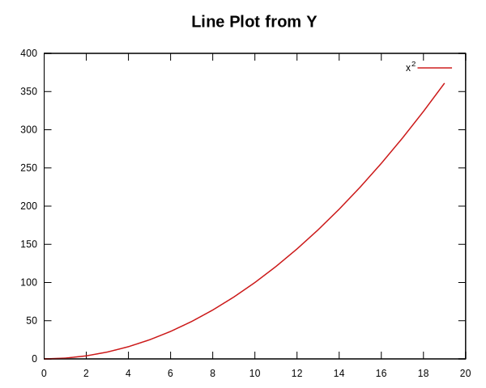

Welcome to Plotpp
Plotpp
A plotting library for C++ that uses Gnuplot as a backend.
Allows plotting from custom containers/vectors if they use begin() and end() iterators as well as plotting from built in arrays.
Requirements
- Gnuplot: Homepage Windows Download Linux install:
Note: The project can be build without gnuplot, since this library will only communicate with gnuplot through pipes. But you will need gnuplot to display the graphical plots. - C++20
Dependencies
All dependencies are managed by the CMake scripts using CPM. The dependencies will be automatically downloaded, build and linked to the project - if not already know by CMake. - {fmt}: GitHub, Documentation, Conan
Features
Plotting Styles
- Line/filled Line/filled Curves
- Poins/Scatter/XError/YError/XYError
- Arrows/Vectors/Quiver
- Heatmap
- Boxes
- Boxplot
- Circle
- Pie-Charts
- Impulses
- Steps/filled Steps
Examples
You can see all examples in the examples/ folder.
Line Plot
int main() {
using namespace plotpp;
{
std::vector<double> x(20);
for(size_t i=0; i < x.size(); ++i) x[i] = i;
std::vector<double> y1(20);
for(size_t i=0; i < y1.size(); ++i) y1[i] = 1./i*30;
Figure fig("Line Plot from XY");
fig.add(line(&x, &y1).label("1/x*30"));
fig.show();
}
}

Integration
CMake
cmake_minimum_required(VERSION 3.15)
project(PROJECT_NAME CXX)
find_package(plotpp CONFIG REQUIRED)
add_executable(main src/main.cpp)
target_link_libraries(main plotpp::plotpp)
Conan TO be done
conanfile.txt
[requires]
plotpp/<version>
[generators]
CMakeDeps
CMakeToolchain
[layout]
cmake_layout
conanfile.py
from conan import ConanFile
from conan.tools.cmake import cmake_layout
class ExampleRecipe(ConanFile):
settings = "os", "compiler", "build_type", "arch"
generators = "CMakeDeps", "CMakeToolchain"
def requirements(self):
self.requires("plotpp/<version>")
def layout(self):
cmake_layout(self)
build instructions with conan
# install dependencies
conan install . --build=missing --output-folder build
# Optional: set your prefered compile
set CC=<path/to/C-compiler>
set CXX=<path/to/C++-compiler>
set LD=<path/to/Linker>
# generate build scripts (for the build tool e.g.: -G "Ninja Multi-Config")
cmake -S . -B build -DBUILD_EXAMPLES=ON -DCMAKE_TOOLCHAIN_FILE=build/Release/generators/conan_toolchain.cmake
# build the project
cmake --build build_gcc --config Release
Conan FAQ
- How can I make Conan use a different CMake generator?
Add to your profile:[conf] tools.cmake.cmaketoolchain:generator=Ninja - Conan selects the wrong compiler?
Add to your profile:
[conf] tools.build:compiler_executables={"c" : "gcc", "cpp" : "g++"}or:[buildenv] CC=gcc CXX=g++ LD=ld - Where can I find the default profile?
bash conan profile path default - I want to create a library but with
conan create . --build=missingit cannot find the header files Enable transitive headers in yourconanfile.py:py def requirements(self): self.requires("<library/version>", transitive_headers=True)
Manually with add_subdirectory
Manually download the library and add it via add_subdirectory.
add_subdirectory(path/to/Plotpp)
add_executable(PROJECT_NAME main.cpp)
target_link_libraries(YOUR_PROJECT_NAME PUBLIC plotpp)
Note: you would also need to add and link against fmt
Manual Build
- include the folder containing
plotpp.hpp - compile and link all
*.cppfiles inplotpp/